← 返回阅读库 · 原论文目录
论文讲解阅读文档 · 机器人学 · v123
Video Prediction Policy: A Generalist Robot Policy with Predictive Visual Representations
视频时长 00:10:24；讲解文字 4,972 字符；提取讲解画面 51 张。按视频原顺序阅读，每段文字保留时间戳。
文字来自整段视频的自动语音转写，按自然停顿分段，并与 PPT / 论文页面 / 演示画面对齐。未将讲解压缩为摘要；术语、数字和口述公式请结合画面及原论文核对。 阅读稿已校正规范部分明确术语误识别；原始逐字稿和每处修改记录另行保留。
讲解画面为源视频截图（640×360），不是可编辑 PPT 文件。全片按每秒 2 帧扫描内容变化，逐步展开页保留；连续动画保留代表画面。清晰度受源视频限制。
下载完整资料包 · 含离线 HTML、PDF、Word、全部 PPT 画面和字幕。
原论文与材料
Video Prediction Policy: A Generalist Robot Policy with Predictive Visual Representations · 下载完整 PDF（18 页）
按时间阅读
00:00:00–00:00:18 · 画面 001
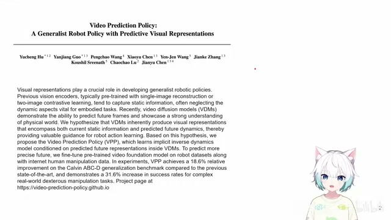
00:00:00–00:00:18 · 画面 001大家好,今天我们来快速数一篇论文 Video Prediction Policy A generalist robot policy with predictive visual representations 那这篇论文呢其实本质上它是一个 diffusion policy 但是呢它用的 image encoder 比较特殊是一个 video diffusion 作为一个 image encoder 那当然你说预测未来的图片的像素用它来做 robot control 这个东西已经有很早的历史了你在说 reinforcement learning 里面 model based control 里面 world model 对吧就是这种
00:00:18–00:01:06 · 画面 002
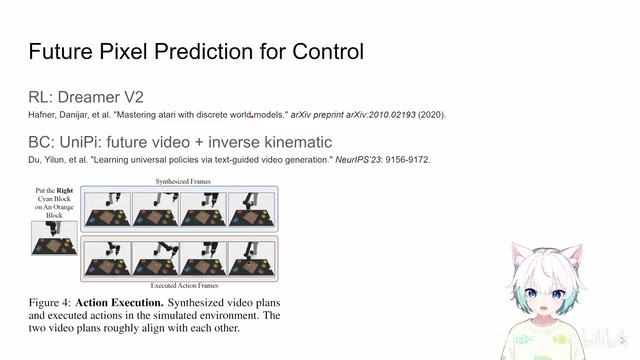
00:00:18–00:01:06 · 画面 002Dreamer V2、Dreamer V3 这种样的啊，world model，那么再靠近一点，behavior cloning 里面呢，这个 UniPi 啊，根据 language 然后先预测未来的视频，然后呢，再用 inverse kinematic 把中间具体的 action 是什么解出来，这样的一个形式，那么就这样一个主题，这样一个方法，某些人啊做了很多相同的类似的文章，然后呢，一个个的也没有那么好复现但是 intuition 还是很直接的就是我们只要能够把未来应该会发生什么事我们的模型能够知道的话那么具体在将来应该做怎么样的控制应该是相对比较好生成的但是话又说回来你想要真正的去预测未来的图片的状况特别是你要生成这种原始的 pixel 想要生成一个好的结果其实是非常困难的要么就是时间拖得很长要么就是你生成出来可能带有各种 artifacts
00:01:06–00:01:44 · 画面 003
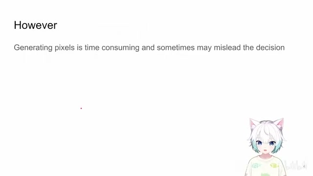
00:01:06–00:01:44 · 画面 003它就会影响我们真正的 action 的生成所以呢生成原始的像素要想精确的复刻未来的图像它既不太实际也没有必要实际上这篇文章说的是我们不用很累很麻烦就可以借用生成未来图像这一个概念也好这一个辅助的任务也好用这样的一个模型来去帮我们获得一个好的这个图像的 encoding
00:01:44–00:01:50 · 画面 004
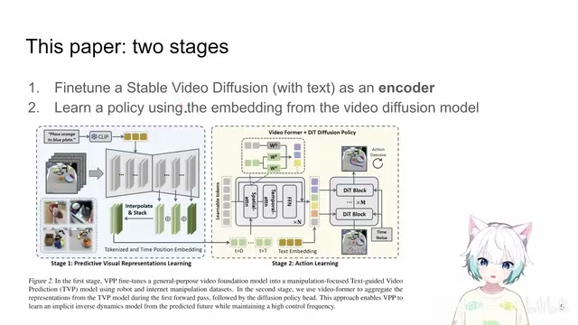
00:01:44–00:01:50 · 画面 004那具体怎么做呢这篇文章呢就是分为了两个阶段的训练其实呢就是两个大系统一个呢就是我的正常的标准的 diffusion policy 它用的是 transformer base 的那这个呢其实是 stage 2 第二个阶段那么其实它特别的地方就在于我在这个生成 action 的过程中我肯定要 condition on 什么东西对吧 condition on image 这种东西 condition on language embedding 那这个 condition 特别是这个 image 这一块
00:01:50–00:01:52 · 画面 005
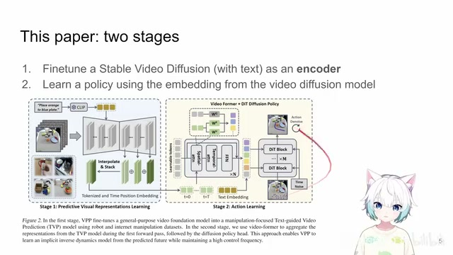
00:01:50–00:01:52 · 画面 00500:01:52–00:01:59 · 画面 006
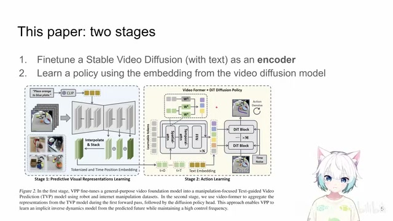
00:01:52–00:01:59 · 画面 00600:01:59–00:02:01 · 画面 007
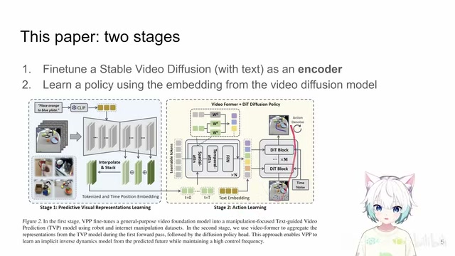
00:01:59–00:02:01 · 画面 00700:02:01–00:02:42 · 画面 008
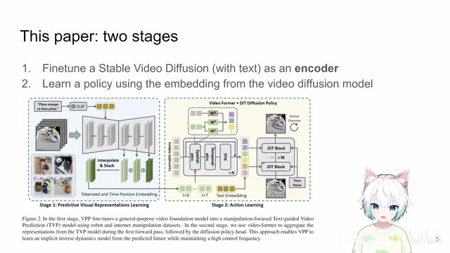
00:02:01–00:02:42 · 画面 008它不单纯的是一个 image 了它是一个 condition on video 那这个 video 怎么来它就是用了一个 pretrained 的一个 stable video diffusion 然后在自己的数据集上进行 fine-tune 但是吞完之后你生成的还不是一个 video 来交给它去做因为我们之前说了你去生成一个 video 它既不拟真也很复杂作者只是借用 SVD 这样一个网络的结构把这个 video diffusion 中可能存在的对我们未来有用的信息给它提取出来下面我们就来看它具体是怎么做的
那就是这个第一阶段 Text Guided Video Prediction Model 那就像我们刚刚已经说的它是从一个 Pretrain SVD 开始的这是一个 1.5B 的模型那这个模型呢它是原本是一个 Image to Video 的这样一个模型但是呢我们要想办法控制它要生成什么样的 Video 对吧那因为我们要解不同的任务嘛而这种不同的任务呢是通过文字来表达的所以呢这里呢作者用了一个 Frozen 的这个 Clip Encoder 把这个里面的
00:02:42–00:02:47 · 画面 009
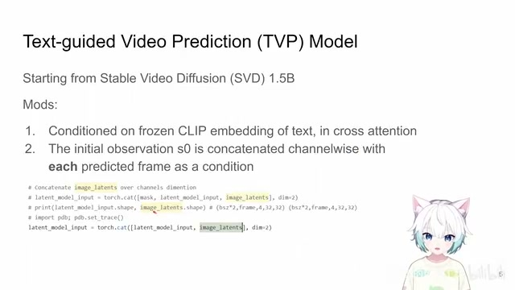
00:02:42–00:02:47 · 画面 00900:02:47–00:02:48 · 画面 010
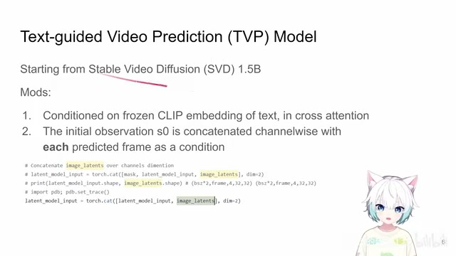
00:02:47–00:02:48 · 画面 01000:02:48–00:03:15 · 画面 011
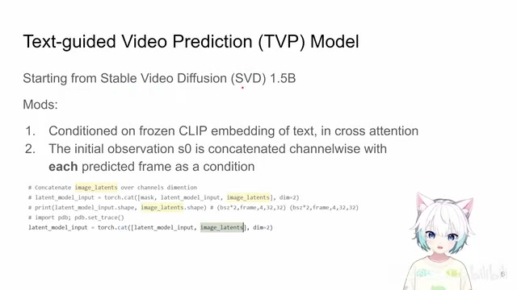
00:02:48–00:03:15 · 画面 011text 文本给它编辑出来，那这个文本呢作为额外的条件通过 crossattention 加到你这个 svd 的这个图像生成的过程中，那这样子呢我们就可以通过文本更改不同的文本来控制我们想要生成什么样的一个视频，这是一个很直观的改动，那么第二点呢就是这个模型它本身是一个单张图片生成 video 的这样一个模型，那这里呢作者做的一点改动就是虽然我的整个这个 video 它也是从噪声初始化的
00:03:15–00:03:17 · 画面 012
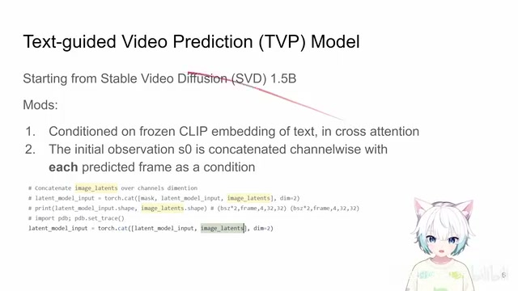
00:03:15–00:03:17 · 画面 01200:03:17–00:04:15 · 画面 013
00:03:17–00:04:15 · 画面 013但是对于每一帧来说，它不仅仅是三个 channel 的这个 pixel 或者说就是四个 channel 的 latent，它不只是这个，它呢还要 concatenate 上这个第一帧的这个 observation 作为一个额外的条件作为你的这个模型的输入，也就是说相当于它输入的 channelbatch sizeframe 就是你的 sequence 的长度，比如说是 14 或者 25，这里呢是为什么是 4，它是这个过了 VAE 之后的这个从 RGB 变到了四个 channel，那这里呢作者是在这个 channelwise 啊这里啊把他的这个第一帧的这个图像作为一个条件来给他连接起来了，你看到就是他这里做的这样一个操作，这是作者对一个标准的 SVD 的一个改动，那拿到这样的模型之后呢你就可以根据不同的任务去训练他了，那这里呢作者的训练呢 loss 呢还是用了标准的 SVD diffusion 这些 loss，只不过呢我们看数据集他用了这个 something something
00:04:15–00:04:17 · 画面 014
00:04:15–00:04:17 · 画面 01400:04:17–00:04:20 · 画面 015
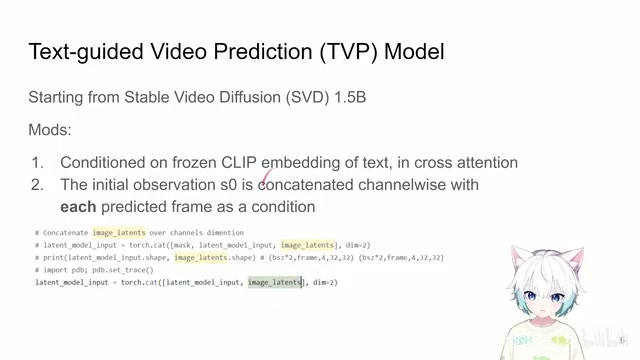
00:04:17–00:04:20 · 画面 01500:04:20–00:04:24 · 画面 016
00:04:20–00:04:24 · 画面 01600:04:24–00:04:33 · 画面 017
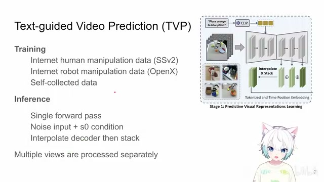
00:04:24–00:04:33 · 画面 017用了一些 openx 里面的一些子集，同时他们自己还收集了一些数据，就是你后面在 evolution 中也可以看到，我们其实很多性能的提升都是来自于这种额外的数据的训练，这点我们要记住，那么有了这样的一个模型之后我们之前说了我们不希望这个模型去生成真正的一个视频，我只需要
00:04:33–00:04:34 · 画面 018
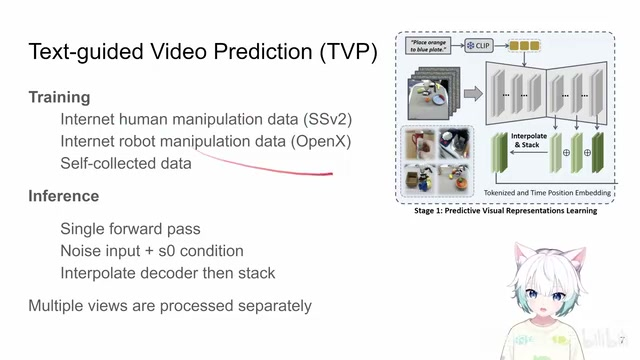
00:04:33–00:04:34 · 画面 01800:04:34–00:04:45 · 画面 019
00:04:34–00:04:45 · 画面 01900:04:45–00:04:46 · 画面 020
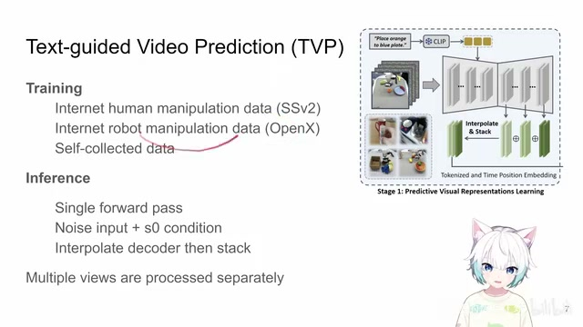
00:04:45–00:04:46 · 画面 02000:04:46–00:05:48 · 画面 021
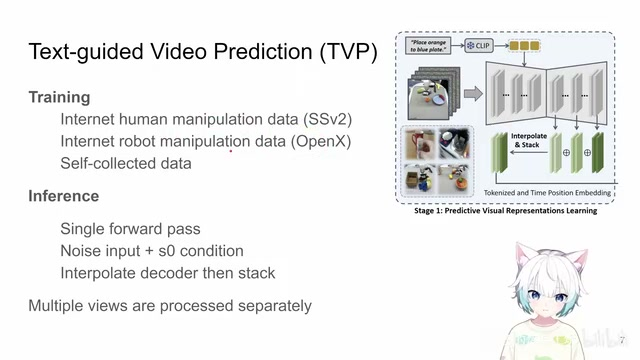
00:04:46–00:05:48 · 画面 021快速的过一个 forward pass，然后把它的中间的 representation 提出来，我用这些 representation 来作为我生成 action 的一个条件就好了那进去哪里呢，作者呢这里用的是这个 unet 后面这个 decoder，那你想 unet 嘛出来的这个 intermediate representation 它的尺寸是不一样的，那怎么办呢，很直接的就是你直接 interpolation 就直接差值给它放大到一个尺寸就好了，然后那么你们每一层都有一个 intermediate representation 啊，最后呢把这些东西就直接也是 channelwise 这样给它
叠起来就好了，所以核心就是虽然我是训了一个 video prediction model，它就会根据我当前的文本去预测我未来想要生成什么样的图像，但是呢我并不会真的去把这个视频生成出来，我只是取它推理一步之后中间的这个 representation 给它取出来这是作者的一个设计，当然根据你具体的机器人设计你可能同时会有很多个相机，那么不要紧你每个相机单独的这么推理一遍就好了，这是作者在第一个阶段我是如何化用一个 video diffusion model 一个从图片到 video 的这样一个 model 把它变成一个好的 image encoder 这样一个过程，这是第一阶段的 tvp，第二阶段就是我们说的该把这个
00:05:48–00:05:49 · 画面 022
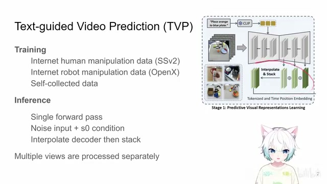
00:05:48–00:05:49 · 画面 02200:05:49–00:06:11 · 画面 023
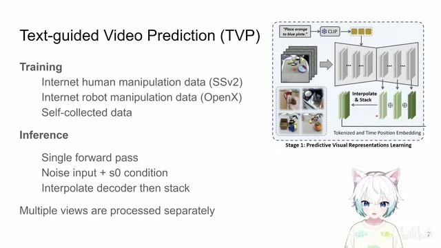
00:05:49–00:06:11 · 画面 02300:06:11–00:06:12 · 画面 024
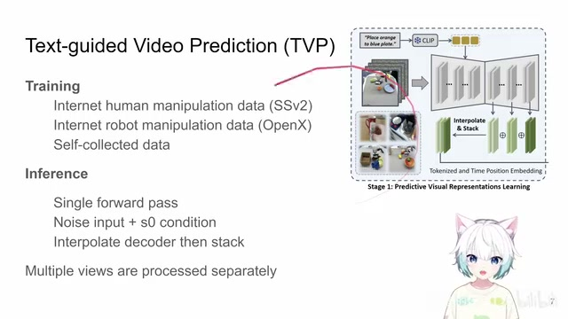
00:06:11–00:06:12 · 画面 02400:06:12–00:06:14 · 画面 025
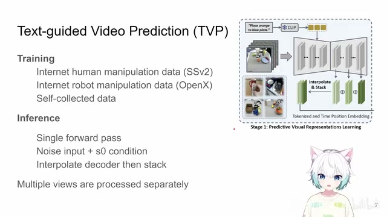
00:06:12–00:06:14 · 画面 02500:06:14–00:06:41 · 画面 026
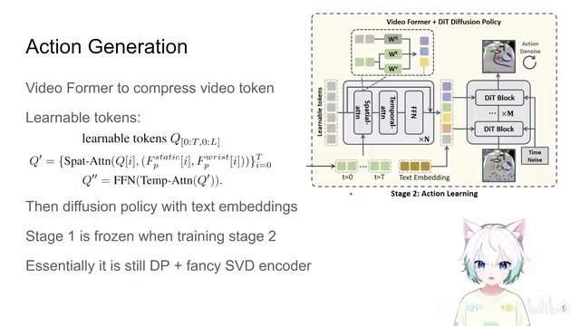
00:06:14–00:06:41 · 画面 026动作生成出来了，你第一阶段这个 TVP 训练好就放在那里不要动了，那第二阶段呢作者根据你中间的这个 representation 额外的呢再引入了一个 videoformer 去把你预测的未来的这些视频的 representation 给它压缩一下，那你可以看到比如说你预测未来有 T 针，那对于每一个时刻你有 L 个 learnable token那这样一共就是 T 乘 L 个 learnable token。你使用这个 vqformer 的这样一个形式，把 learnable token 作为 query，然后 key value 都从这个你预测出来的这个 embedding 里面出，然后做 cross attention 嘛，对吧？最后提取出来你就只用这个 learnable token，然后呢再加上 text embedding。这里还是用的 cliptext embedding，把整个这一个序列串起来，再再通过你的这个 cross attention 加到你的这个 action denoise 里面。
00:06:41–00:06:42 · 画面 027
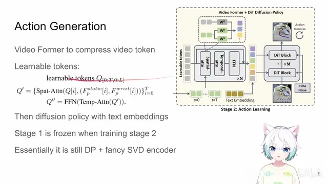
00:06:41–00:06:42 · 画面 02700:06:42–00:06:54 · 画面 028
00:06:42–00:06:54 · 画面 02800:06:54–00:06:56 · 画面 029
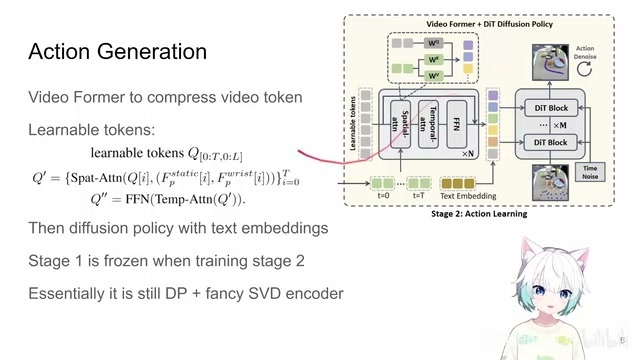
00:06:54–00:06:56 · 画面 02900:06:56–00:06:57 · 画面 030
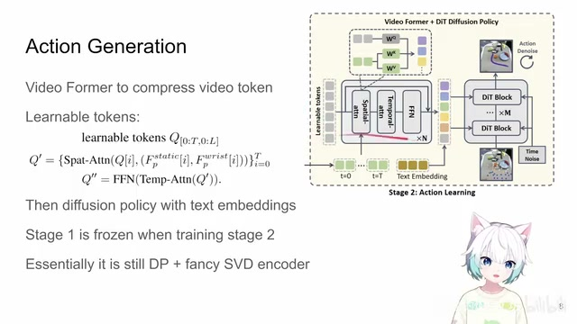
00:06:56–00:06:57 · 画面 03000:06:57–00:07:10 · 画面 031
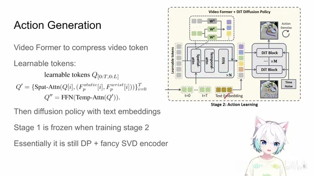
00:06:57–00:07:10 · 画面 031通过这样一个过程来训一个 Diffusion Policy，这样子你就可以把真正的 Action 给它生成出来了。所以还是整个文章它的核心就是一个 Diffusion Policy，但是它用了一个非常 Fancy 的 Encoder，它是一个 Video Diffuser Model 作为 Encoder，这个就是本文的核心。那么下面我们可以看到作者的实验在模拟器上用了 CALVIN 和 Meta-World，注意这里还是。
00:07:10–00:07:12 · 画面 032
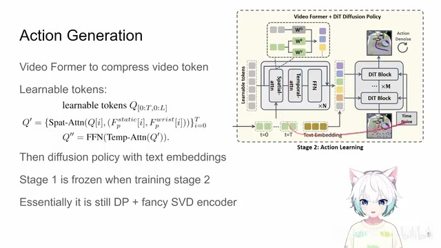
00:07:10–00:07:12 · 画面 03200:07:12–00:07:26 · 画面 033
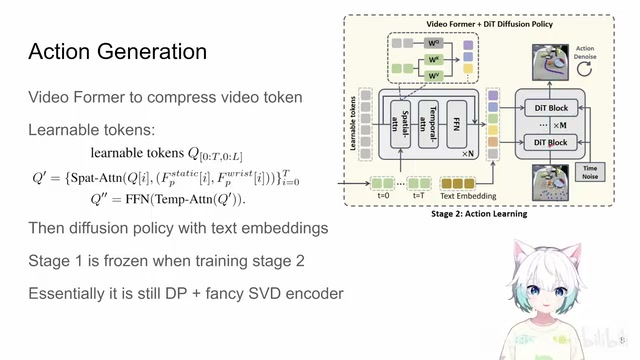
00:07:12–00:07:26 · 画面 03300:07:26–00:08:03 · 画面 034
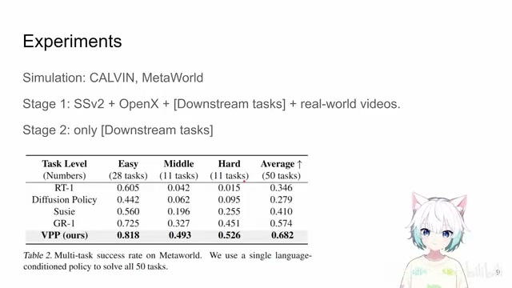
00:07:26–00:08:03 · 画面 034第一个阶段模型训练的时候用了 something something，用了 openx 的一些数据集，用了你特定的任务的数据。然后作者说自己还录了一些 real world videos，整个所有的这些数据加起来训练了一个 stable video diffusion。而第二个阶段就是它的 diffusion policy 的过程，只用了模拟集中的比如说它是 CALVIN 的，就是用 CALVIN 的数据，它是 meta world 它就用 meta world 的数据，只用这样的数据来训练 diffusion policy。
你可以看到在这个 meta world 上 success rate 还有在这个 CALVIN 上是从 ABC 三个数据集里面的任务去做训练，然后去 transfer 到 D 这个数据集上，看到取得的性能。
00:08:03–00:08:04 · 画面 035
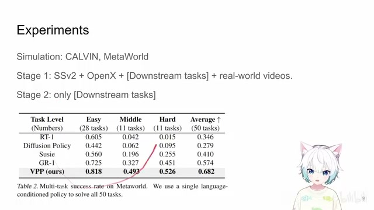
00:08:03–00:08:04 · 画面 03500:08:04–00:08:06 · 画面 036
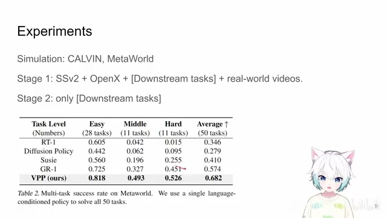
00:08:04–00:08:06 · 画面 03600:08:06–00:08:14 · 画面 037
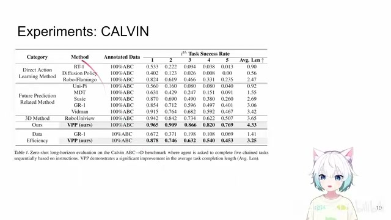
00:08:06–00:08:14 · 画面 03700:08:14–00:08:18 · 画面 038
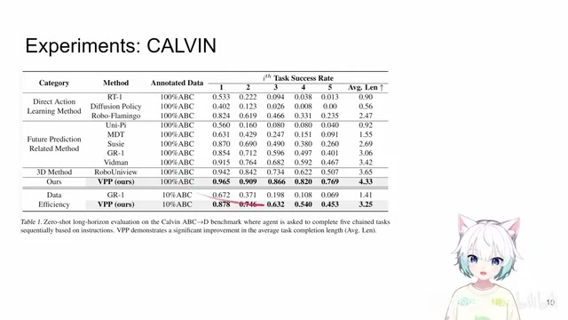
00:08:14–00:08:18 · 画面 038但是我们还是要记得对吧，这么好的效果它不是建立在单纯的你的 benchmark 的这些数据上的，它还是包括了这种额外的数据这些东西来做的训练。可以看到这里作者有 ablation 去讲它，那么当然作者还有对比，我觉得这个其实是最有意义的，你用什么样的 image encoder 来去做效果是好对吧，这个是这样。那么当然还有其他的对比，比如说我从哪一层取 feature 效果好。
00:08:18–00:08:21 · 画面 039
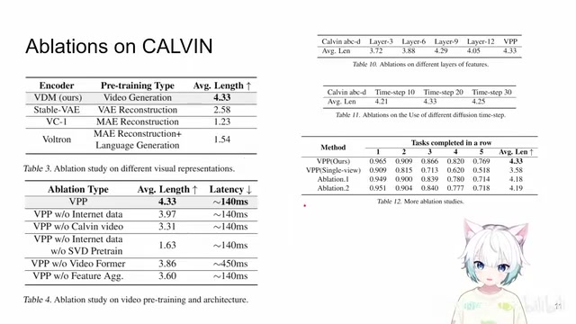
00:08:18–00:08:21 · 画面 03900:08:21–00:08:22 · 画面 040
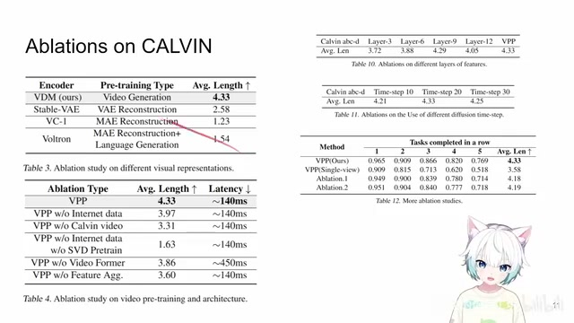
00:08:21–00:08:22 · 画面 04000:08:22–00:08:24 · 画面 041
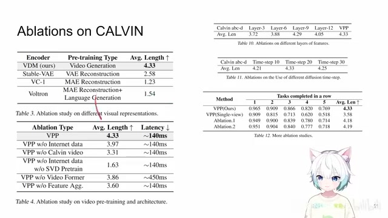
00:08:22–00:08:24 · 画面 04100:08:24–00:08:31 · 画面 042
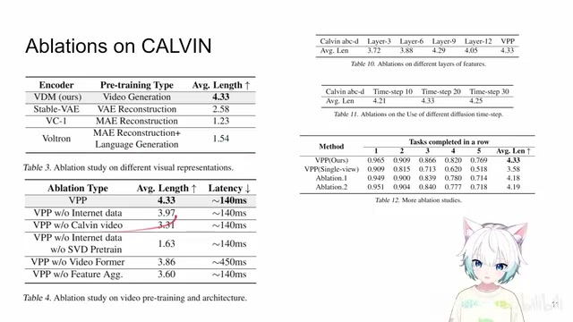
00:08:24–00:08:31 · 画面 04200:08:31–00:08:32 · 画面 043
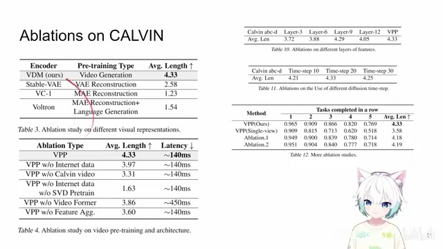
00:08:31–00:08:32 · 画面 04300:08:32–00:08:55 · 画面 044
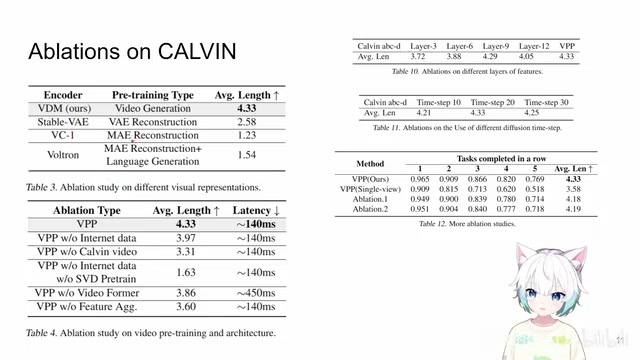
00:08:32–00:08:55 · 画面 044然后呢，我的 diffusion policy 该推测多少步，还有这个比如说我只用一个 camera 会怎么样。那么包括更多的 ablation，这个呢大家可以在这个文章的附录中找到，感兴趣的朋友呢非常推荐你到原文查看。那当然这里还有作者提供一个很好的一个示例啊，那么这是我的单图的输入，这是我的文本，我的光处是什么，第一行，如果把 30 步的这个 video diffusion 呢 denoise 都跑完，它会是生成什么样的一个结果。
00:08:55–00:09:35 · 画面 045
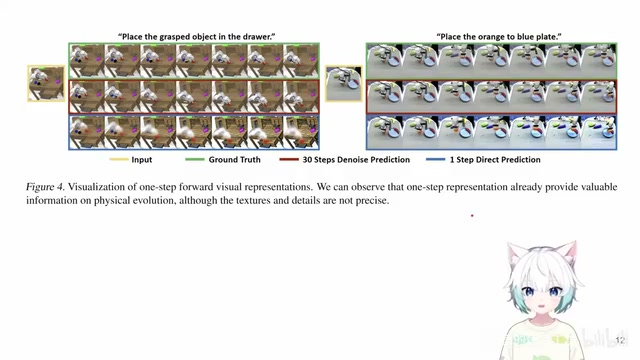
00:08:55–00:09:35 · 画面 045但是呢，我实际推理的时候为了因为我要加速嘛，我只会进行一步的这个 denoise，它出来的结果是什么？其实你发现这个结果出奇意料的，它至少是一个有意义的结果对吧？它这个结果其实还是挺不错的，虽然你说从图像质量上它肯定没有说跑完 30 步生成的这个图像精美，但是呢它对于这个 robot control 来说足够了，能够取得比较好的控制的效果，而且你看这样能节约多少推理的时间。
00:09:35–00:09:36 · 画面 046
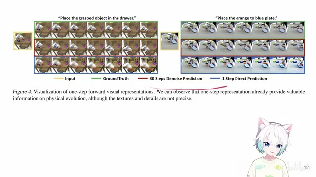
00:09:35–00:09:36 · 画面 04600:09:36–00:09:39 · 画面 047
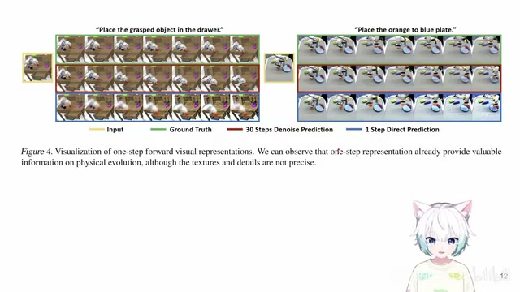
00:09:36–00:09:39 · 画面 047对吧，这是一个挺有意思的可视化。那么当然了，作者还有很多真机的实验，那这个东西呢毕竟也是很难复现，作为参考就可以了。好的，那么以上就是我对这个文章的一个非常快速的整理，总来说还是就是一个 Diffusion Policy，但是它加了一个非常 Fancy 的 Image Encoder，它这个 Fancy Encoder 就是一个 Video Diffusion Model。但是呢，到这里呢我们不禁要想了，我们知道预测未来的 Pixel 它是一个好的有用的这样的一个任务，但是 Pixel 就是唯一的解吗？
00:09:39–00:10:11 · 画面 048
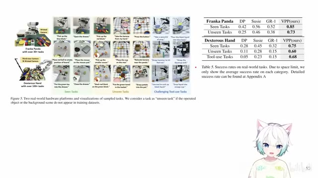
00:09:39–00:10:11 · 画面 048我们是不是可以预测一些其他的别的东西，它能够比 pixel 更加高效？那么这里有一篇 pixel motion，它是预测类似于未来的光流的一样的东西。这样一个文章，在这个方向感兴趣的朋友可以去了解一下。好的，那么感谢您的收看，请多多指点。
00:10:11–00:10:12 · 画面 049
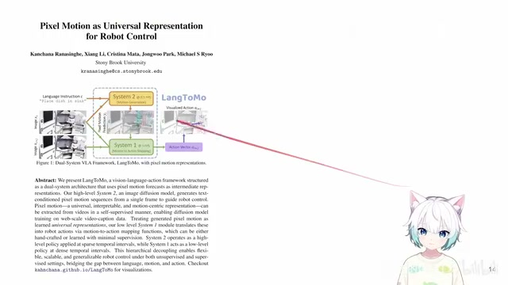
00:10:11–00:10:12 · 画面 04900:10:12–00:10:24 · 画面 050
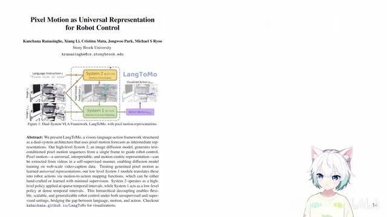
00:10:12–00:10:24 · 画面 05000:10:24–00:10:24 · 画面 051
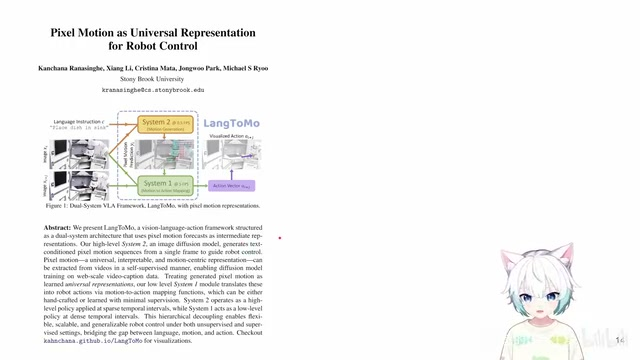
00:10:24–00:10:24 · 画面 051转写与来源说明 · 0 个自动复核提示
保留 27 个原始语音片段，0 个片段触发自动复核提示。提示仅用于定位可能的术语、重复或识别问题，不等于已确认错误。
讲解画面为源视频截图（640×360），不是可编辑 PPT 文件。全片按每秒 2 帧扫描内容变化，逐步展开页保留；连续动画保留代表画面。清晰度受源视频限制。
原视频：paper/合集_2026-10-16_机器人学/[论文简析]Video Prediction Policy A Generalist Robot Policy...[2412.14803].mp4
SHA-256：23219cbbfc5a0f90f874426c8834ea370768b46e8a21b30b4e5ee9c1f581629b
全文按视频语音与画面制作。原论文可从上方链接下载；完整资料包保留全文、原始逐字稿、字幕和校对记录。